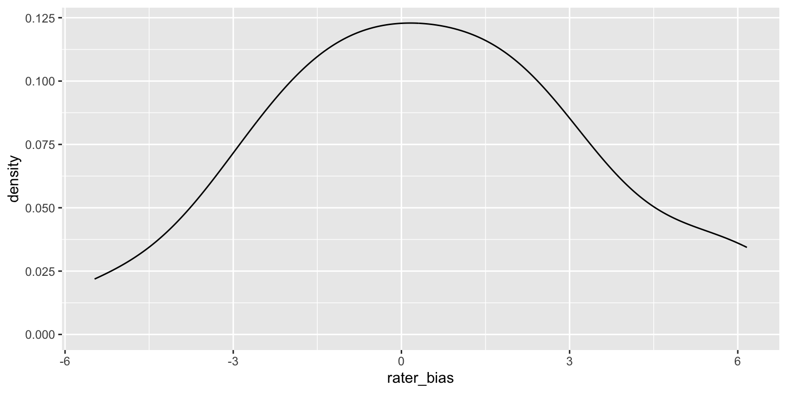
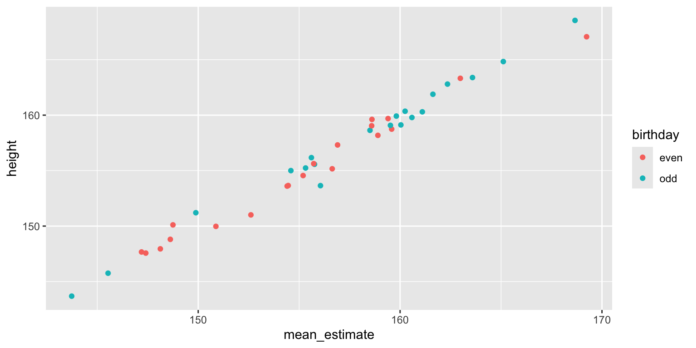

library(tidyverse)
library(lmerTest)
set.seed(90210)Shiny app for a face-rating example.
Imagine you want to find out if Armenian women born on an even-numbered day are taller than women born on an odd-numbered day. (I’ve chosen Armenian women because they’re the first row in this paper.)
First, let’s simulate a group of 20 women born on even-numbered days and 20 women born on odd-numbered days.
stim_n <- 20
# height stats from https://journals.plos.org/plosone/article?id=10.1371/journal.pone.0018962
height_m <- 158.1
height_sd <- 5.7
stim <- tibble(
stim_id = 1:(stim_n*2),
birthday = rep(c("odd", "even"), stim_n),
height = rnorm(stim_n*2, height_m, height_sd)
)
Obviously, the oddness of date of birth is not going to have any effect on women’s actual height and a two-sample t-test confirms this. However, there is a small difference between the means of the groups just due to chance (2.81 cm).
t.test(stim$height ~ stim$birthday)
Welch Two Sample t-test
data: stim$height by stim$birthday
t = -1.5, df = 38, p-value = 0.1
alternative hypothesis: true difference in means between group even and group odd is not equal to 0
95 percent confidence interval:
-6.4997 0.8767
sample estimates:
mean in group even mean in group odd
154.9 157.7 Measurement with Error
But what if we don’t measure height from each women once, but have a few different raters estimate it? The raters will each have their own bias, systematically overestimating or underestimating height on average. Let’s simulate 20 raters who have biases with an SD of 2 cm.
rater_n <- 20
rater_bias_sd <- 2
rater <- tibble(
rater_id = 1:rater_n,
rater_bias = rnorm(rater_n, 0, rater_bias_sd)
)
New we can get each rater to estimate the height of each woman. Their estimate is the woman’s actual height, plus the rater’s bias, plus some error (sampled from a normal distribution with a mean of 0 and an SD of 4 cm, since estimating height is hard).
dat <- expand.grid(
rater_id = rater$rater_id,
stim_id = stim$stim_id
) %>%
left_join(rater, by = "rater_id") %>%
left_join(stim, by = "stim_id") %>%
mutate(
error = rnorm(nrow(.), 0, 4),
estimate = height + rater_bias + error
)Aggregating by Stimuli
You can aggregate by stimuli, that is, average the 20 raters’ estimate for each stimulus. You now have 40 mean estimates that are fairly well-correlated with the women’s actual heights.
dat_agg_by_stim <- dat %>%
group_by(stim_id, birthday, height) %>%
summarise(mean_estimate = mean(estimate))`summarise()` has grouped output by 'stim_id', 'birthday'. You can override
using the `.groups` argument.
You get pretty much the same result when you compare these mean estimates between the groups of women with odd and even birthdays.
t.test(dat_agg_by_stim$mean_estimate ~ dat_agg_by_stim$birthday)
Welch Two Sample t-test
data: dat_agg_by_stim$mean_estimate by dat_agg_by_stim$birthday
t = -1.4, df = 38, p-value = 0.2
alternative hypothesis: true difference in means between group even and group odd is not equal to 0
95 percent confidence interval:
-6.473 1.130
sample estimates:
mean in group even mean in group odd
155.2 157.9 Aggregating by Raters
Alternatively, you can aggregate by raters, that is, average the 20 odd-group estimates and 20 even-group estimates for each rater. Now raters are your unit of analysis, so you’ve increased your power by having 20 raters and a within-subject design (each rater estimates heights for both odd- and even-birthday groups).
dat_agg_by_rater <- dat %>%
group_by(rater_id, birthday) %>%
summarise(mean_estimate = mean(estimate)) %>%
spread(birthday, mean_estimate)`summarise()` has grouped output by 'rater_id'. You can override using the
`.groups` argument.t.test(dat_agg_by_rater$odd, dat_agg_by_rater$even, paired = TRUE)
Paired t-test
data: dat_agg_by_rater$odd and dat_agg_by_rater$even
t = 11, df = 19, p-value = 0.000000002
alternative hypothesis: true mean difference is not equal to 0
95 percent confidence interval:
2.145 3.198
sample estimates:
mean difference
2.672 Now the difference between the odd- and even-birthday groups is highly significant! What’s going is that you now have a relatively accurate estimate of the chance mean difference between the 20 women in the odd-birthday group and the 20 women in the even-birthday group. Since raters are the unit of analysis, this effect is likely to generalise to the larger population of potential raters, but only when they are rating these exact stimuli. Your conclusions cannot generalise beyond the stimulus set used here.
While this seems like an obvious problem when the question is whether Armenian women with odd birthdays are taller or shorter than Armenian women with even birthdays, the problem is not so obvious for other questions, like whether boxers who won their last match have more masculine faces than boxers who lost their last match. The point of this tutorial isn’t to call out any particular studies (I’ve certainly done this wrong myself plenty of times in the past), but to illustrate the enormous problem with this method and to explain the solution.
The larger the number of raters, the larger this false positive problem becomes because you’re increasing power to detect the small chance diffference between the two groups. You can play around with how changing parameters changes the power and false positive rates for by-stimulus, by-rater, and mixed effect designs at this shiny app.
Mixed Effect Model
In the particular case above, we’re only interested in the between-stimulus (and within-rater) main effect of birthday oddness. Therefore, aggregating by stimuli doesn’t inflate your false positive rate, while aggregating by rater does. However, other designs might have increased false positives for aggregating by stimuli but not by rater, or when aggregating by either.
A mixed effects model avoids the problems of aggregation completely by modelling random variation for both the stimuli and raters, as well as random variation in the size of within-group effects.
I effect code the birthday variable to make interpretation of the effects easier).
# effect-code birthday
dat$birthday.e <- recode(dat$birthday, "odd" = 0.5, "even" = -0.5)
mod <- lmer(estimate ~ birthday.e +
# random slope for effect of birthday, random intercept for rater bias
(1 + birthday.e || rater_id) +
# random intercept for variation in stim height
(1 | stim_id),
data = dat)
summary(mod)Linear mixed model fit by REML. t-tests use Satterthwaite's method [
lmerModLmerTest]
Formula: estimate ~ birthday.e + (1 + birthday.e || rater_id) + (1 | stim_id)
Data: dat
REML criterion at convergence: 4687
Scaled residuals:
Min 1Q Median 3Q Max
-2.8414 -0.6590 0.0102 0.6776 2.6231
Random effects:
Groups Name Variance Std.Dev.
stim_id (Intercept) 34.4640965331 5.870613
rater_id birthday.e 0.0000000214 0.000146
rater_id.1 (Intercept) 10.0890113688 3.176320
Residual 15.8201186615 3.977451
Number of obs: 800, groups: stim_id, 40; rater_id, 20
Fixed effects:
Estimate Std. Error df t value Pr(>|t|)
(Intercept) 156.55 1.18 55.02 132.98 <2e-16 ***
birthday.e 2.67 1.88 38.00 1.42 0.16
---
Signif. codes: 0 '***' 0.001 '**' 0.01 '*' 0.05 '.' 0.1 ' ' 1
Correlation of Fixed Effects:
(Intr)
birthday.e 0.000
optimizer (nloptwrap) convergence code: 0 (OK)
boundary (singular) fit: see help('isSingular')The estimate for (Intercept) is just the mean height estimate (156.55 cm) and the estimate for birthday.e is the mean difference between the odd and even birthday groups (2.67 cm). You can now generalise the conclusions of this mixed effects model to both the population of raters and the population of stimuli.
Thanks to Liam Satchell, Alex Jones, and Ben Jones for the stimulating late-night Twitter discussion that prompted this blog post!
References
Plenty of papers have made this point much more thoroughly Wolsiefer et al. (2017).
References
Barr, Dale J, Roger Levy, Christoph Scheepers, and Harry J Tily. 2013. “Random Effects Structure for Confirmatory Hypothesis Testing: Keep It Maximal.” Journal of Memory and Language 68 (3): 10.1016/j.jml.2012.11.001.
Coleman, E. B. 1964. “Generalizing to a Language Population.” Psychological Reports 14 (1): 219–26. https://doi.org/10.2466/pr0.1964.14.1.219.
Judd, Charles M., Jacob Westfall, and David A. Kenny. 2012. “Treating Stimuli as a Random Factor in Social Psychology: A New and Comprehensive Solution to a Pervasive but Largely Ignored Problem.” Journal of Personality and Social Psychology 103 (1): 54–69. https://doi.org/doi:10.1037/a0028347.
Wolsiefer, Katie, Jacob Westfall, and Charles M. Judd. 2017. “Modeling Stimulus Variation in Three Common Implicit Attitude Tasks.” Behavior Research Methods 49 (4): 1193–209. https://doi.org/10.3758/s13428-016-0779-0.